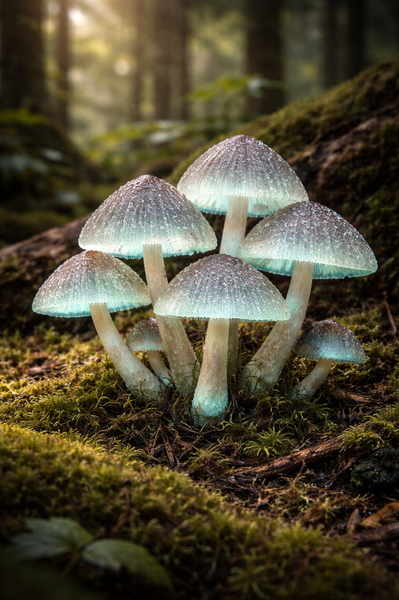

久木村の特産品

御臥山の至宝：クギワラタケ
久木村の聖域、御臥山の奥深くにのみ自生する希少なキノコです。仄暗い森の中で淡い光を放つその姿は非常に幻想的で、古来より村人たちの間では「山の魂」の一部として大切に扱われてきました。
非常に繊細な性質を持ち、村の外へ持ち出すとすぐにその輝きと風味が失われてしまうため、久木村を訪れた方だけが知ることができる、まさに秘蔵の特産品と言えます。
【伝承される味わい】
独特の香りと深いコクを持つクギワラタケは、久木村に古くから伝わる郷土料理の主役として欠かせない存在です。その料理を口にすることで、村の人々は厳しい冬を乗り越える活力を得てきたと言われています。
独特の香りと深いコクを持つクギワラタケは、久木村に古くから伝わる郷土料理の主役として欠かせない存在です。その料理を口にすることで、村の人々は厳しい冬を乗り越える活力を得てきたと言われています。
※クギワラタケは現在、御臥山内の保護区域内でのみ採取が許可されています。無断での採取は固く禁じられておりますのでご注意ください。